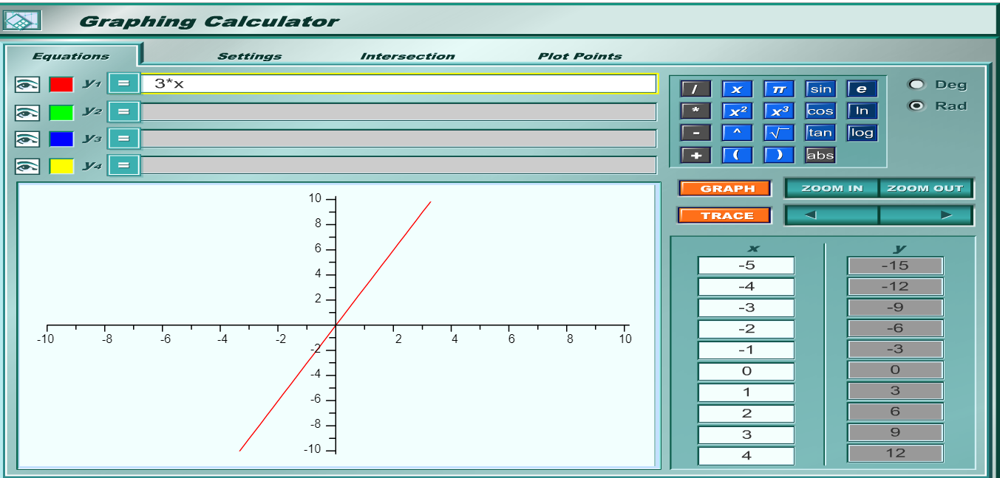
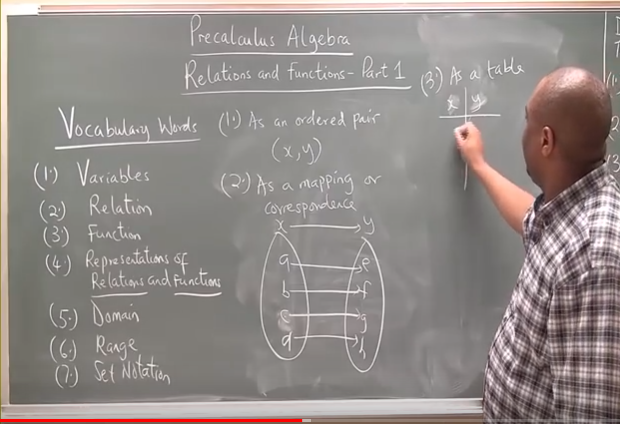
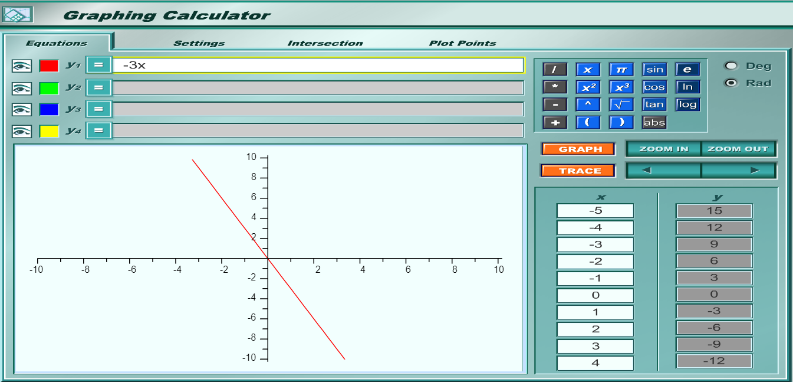
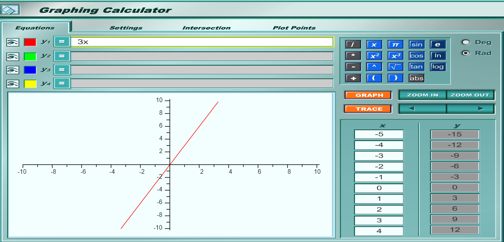
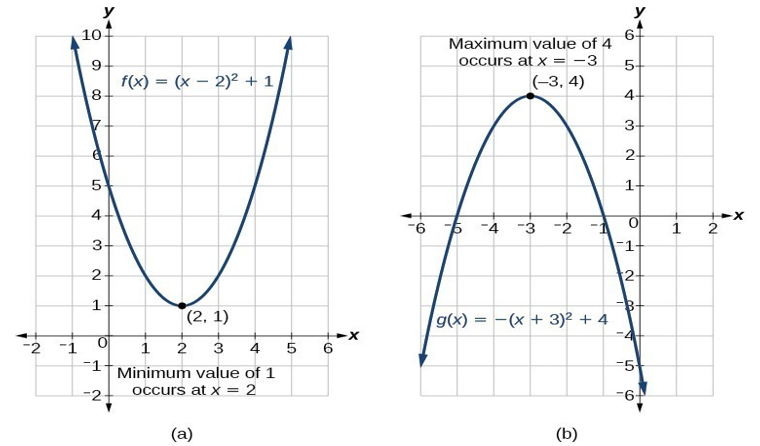
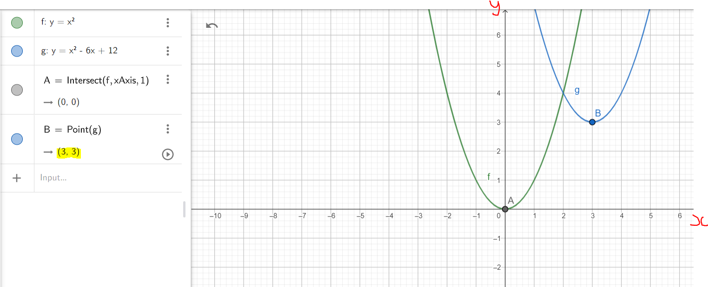
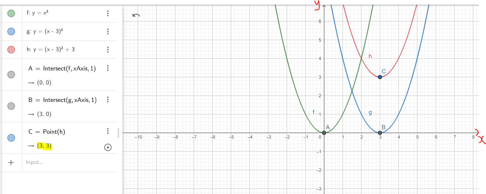
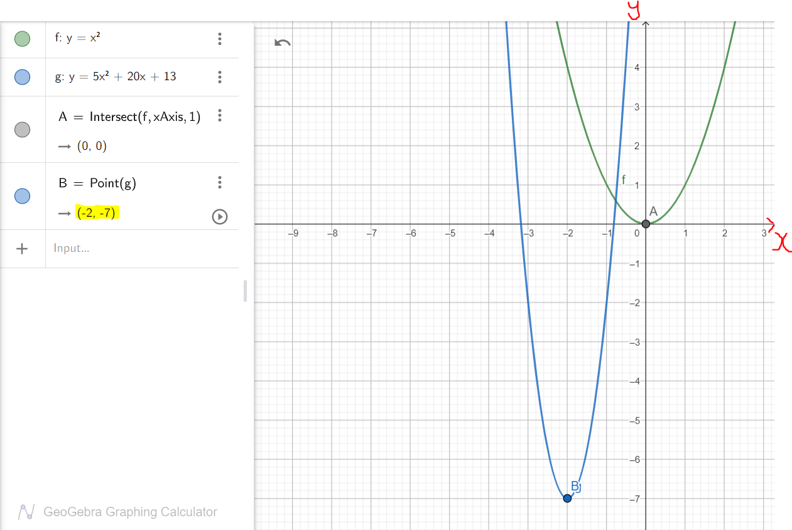
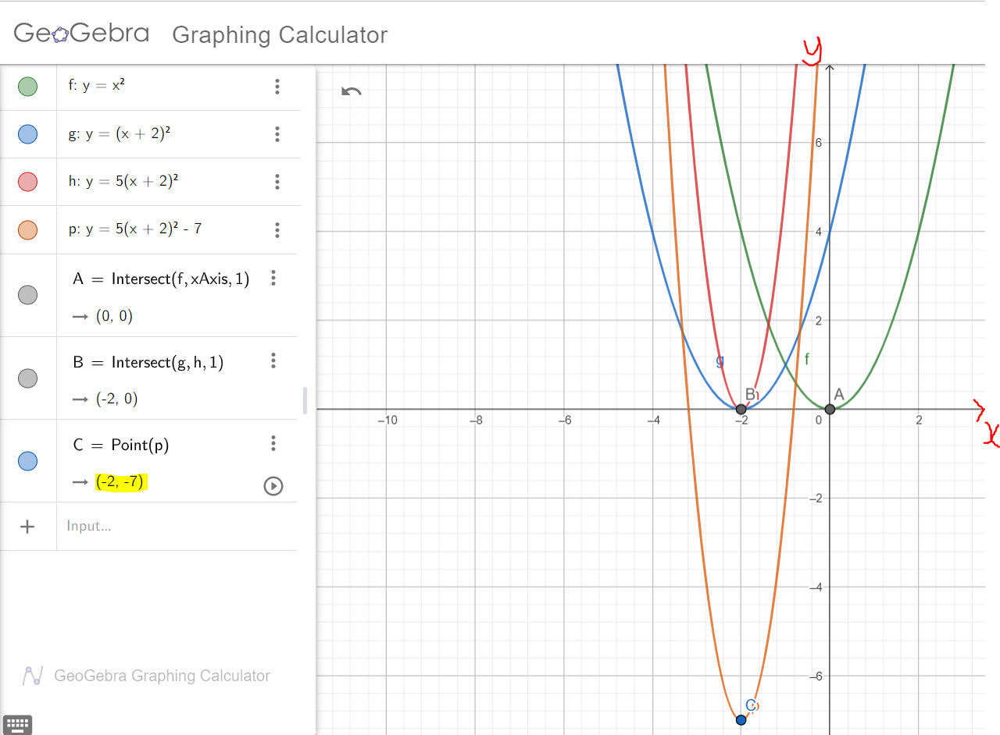
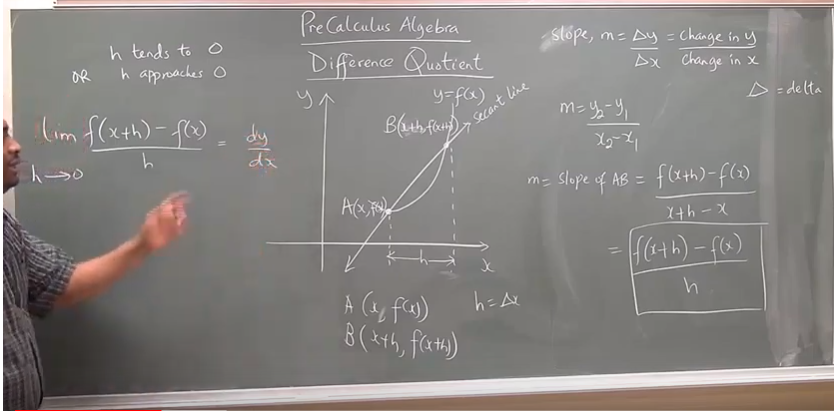

RELATIONS AND FUNCTIONS
Welcome to Our Site
I greet you this day,
First: read the notes/eText.
Second: view the videos/multimedia resources.
Third: solve the questions/solved examples.
Fourth: check your solutions with my thoroughly-explained solutions.
Comments, ideas, areas of improvement, questions, and constructive criticisms are welcome.
Thank you for visiting.
Samuel Dominic Chukwuemeka (Samdom For Peace) B.Eng., A.A.T, M.Ed., M.S
Overview, Domain, Range
Evaluating Functions
Linear Functions
Word Problems on Linear Functions
Quadratic Functions
Word Problems on Quadratic Functions
Symmetry of Functions
Operations on Functions
Properties of Relations and Functions
Difference Quotient
Graphs of Functions
Linear Models
Quadratic Models
Composition of Functions
Inverse of Functions
Functions (All Topics)
Objectives
For Algebra and Discrete Mathematics Students
Students will:
(1.) Define relations.
(2.) Define functions.
(3.) Differentiate between relations and functions.
(4.) Discuss the types of functions.
(5.) List the different ways to represent relations.
(6.) Represent relations using those different ways.
(7.) Define the domain of a relation.
(8.) Define the codomain of a relation.
(9.) Define the range of a relation.
(10.) Represent the domain of a relation in set notation.
(11.) Represent the domain of a relation in interval notation.
(12.) Represent the range of a relation in set notation.
(13.) Represent the range of a relation in interval notation.
(14.) Evaluate functions.
(15.) Discuss the symmetry of functions.
(16.) Determine whether a function is even, odd, or neither even nor odd.
(17.) Perform arithmetic operations on functions.
(18.) Discuss linear functions.
(19.) Discuss the slope concept.
(20.) Determine the slope of a linear function.
(21.) Express linear functions in different forms.
(22.) Discuss the concept of parallel lines based on the slope concept.
(23.) Discuss the concept of perpendicular lines based on the slope concept.
(24.) Interpret the slopes of linear functions.
(25.) Solve applied problems on linear functions.
(26.) Discuss quadratic functions.
(27.) Determine the vertex of a parabola.
(28.) Express quadratic functions in different forms.
(29.) Interpret the vertices of quadratic functions.
(30.) Solve applied problems on quadratic functions.
(31.) Calculate the difference quotient of a function.
(32.) Compose functions.
(33.) Decompose functions.
(34.) Determine the inverse of a function.
(35.) Test if a function is an inverse of another function.
(36.) Solve applied problems on relations.
(37.) Solve applied problems on the inverse of functions.
For Discrete Mathematics Students
(38.) Discuss the properties of relations.
(39.) Discuss order relations.
(40.) Determine the minimal and the maximal element of a poset.
(41.) Determine the lower bounds and the upper bounds of a poset.
(42.) Determine the least upper bound and the greatest lower bound of a poset.
(43.) Draw Hasse diagrams of posets.
(44.) Discuss lattices.
(45.) Discuss compatibility and topological sorting.
(46.) Solve applied problems on order relations.
Skills Measured/Acquired
(1.) Use of prior knowledge
(2.) Critical Thinking
(3.) Interdisciplinary connections/applications
(4.) Technology
(5.) Active participation through direct questioning
(6.) Research
These topics will be covered holistically. Students can focus on the sections relevant to their curriculum.
Vocabulary Words
Ask students to suggest possible vocabulary words for this topic based on the objectives.
Connect with English Language: relation, relative ("blood relative", "relative to ..."),
relationship, compatible, compatibility, rule, least, greatest, minimum, maximum, sort
Connect with Physics: reflection, reflexive, reflexivity
Mathematics: relation, function, one-to-one function, injective function,
onto function, surjective function, bijective function, set, table, mapping, rule,
correspondence, equation, graph, domain, codomain, image, range, set notation, input, output,
x-coordinate, y-coordinate, independent variable, dependent variable, predictor variable,
explanatory variable, response variable, cause, effect, action, consequence, vertical line test,
interval notation, evaluate, symmetry, arithmetic operations, difference quotient, slope,
intercept, x-intercept, y-intercept, slope-intercept form, point-slope form, two-points form,
difference quotient, derivative, function composition, function decomposition, linear functions,
quadratic functions, parabolas, vertical parabola, vertex, axis, line of symmetry, function transformations,
even functions, odd functions, order relations, total order, partial order, pseudo order, quasi order,
reflexivity, symmetric, antisymmetric, transitivity, poset, maximal element, minimal element, Hasse diagrams,
upper bound, lower bound, least upper bound, greatest lower bound, lattices, lexicographic order,
topological sorting
Symbols and Meanings
- $\mathbb{N}$ = set of natural numbers
- $\mathbb{W}$ = set of whole numbers
- $\mathbb{Z}$ = set of integers
- $\mathbb{Z}_+$ = set of positive integers
- $\mathbb{Z}_-$ = set of negative integers
- $\mathbb{Q}$ = set of rational numbers
- $\mathbb{I}$ = set of irrational numbers
- $\mathbb{R}$ = set of real numbers
- $\mathbb{C}$ = set of complex numbers
- $\mathbb{P}$ = set of prime numbers
- { } (braces) = used in set notation
- [ ] (brackets) and ( ) (parenthesis) = used in interval notation
- [ ] = closed interval (closed at both ends)
- ( ) = open interval (open at both ends)
- [ ) = half-closed half-open interval (closed at $1^{st}$ end, open at $2^{nd}$ end)
- ( ] = half-open half-closed interval (open at $1^{st}$ end, closed at $2^{nd}$ end)
- [c, d] = closed interval - includes $c$ and $d$
- (c, d) = open interval - excludes $c$ and $d$
- [c, d) = half-closed half-open interval - includes $c$, excludes $d$
- (c, d] = half-open half-closed interval - excludes $c$, includes $d$
- $D$ = domain
- $C$ = codomain
- $R$ = range
- $x | $ or $x: $ = $x$ such that
- $f(x)$ read as $f \:of\: x$
- $g(x)$ read as $g \:of\: x$
- $h(x)$ read as $h \:of\: x$
- $(f + g)(x)$ read as $f \:plus\: g \:of\: x$
- $(f - g)(x)$ read as $f \:minus\: g \:of\: x$
- $(f * g)(x)$ read as $f \:times\: g \:of\: x$
- $(f \div g)(x)$ read as $f \:divided\: by\: g \:of\: x$
- $f(x) + g(x)$ read as $f \:of\: x \:plus\: g \:of\: x$
- $f(x) - g(x)$ read as $f \:of\: x \:minus\: g \:of\: x$
- $f(x) * g(x)$ read as $f \:of\: x \:times\: g \:of\: x$
- $f(x) \div g(x)$ read as $f \:of\: x \:divided\: by\: g \:of\: x$
- $(f \circ g)(x)$ read as $f$ composed with $g$ of $x$
- $(f \circ g)(x)$ read as The composition of $f$ and $g$ of $x$
- $f(g(x))$ read as $f \:of\: g \:of\: x$
- $(g \circ f)(x)$ read as $g$ composed with $f$ of $x$
- $(g \circ f)(x)$ read as The composition of $g$ and $f$ of $x$
- $g(f(x))$ read as $g \:of\: f \:of\: x$
- $DNE$ read as $Does \:Not\: Exist$
Definitions
A Relation is a set of ordered pairs, $(x, y)$.
$x = input$
$y = output$
For a relation;
An input value has at least an output value.
At least one means one or more
This implies that for a relation;
An input value can have only one output value.
An input value can also have several output values.
A Function is a relation in which each input has a unique output.
It is first an foremost, a relation.
Each input value has a unique output value.
"Unique Output" means that any input cannot have two or more output values
For a function;
An input value can have only one output value.
Two input values can also have the same output value.
However, an input value cannot have more than one output value.
Ask students if they can tell the difference between a function and relation.
Let us look at this way:
Two students can make the same grade on the same mathematics test.
But, no student can make more than one grade on the same mathematics test.
A One-to-One Function is a function in which each input value has a corresponding different output value.
It is also known as an Injective Function.
It is first an foremost, a function.
If the relation is not a function, it cannot be a one-to-one function.
Each input value has a corresponding different output value.
For a one-to-one function;
One input value must have only one output value.
Ask students if they see the reason why it is called one-to-one.
No two input values can have the same output value.
No input value can have more than one output value.
Let us look at this way:
Each student at Arizona Western College (AWC) has only one Student Identification Number (Student ID).
That ID corresponds to each student. It is an "output value", the result of an "input value" - that is being a student.
That ID is also different for each student. No two students have the same ID.
An Onto Function is a function in which each output value is an image of at least an input value.
It is also known as a Surjective Function.
It is first an foremost, a function.
If the relation is not a function, it cannot be an onto function.
Each output value is a result of ("came from", "is as a result of") an input value.
That result is called an image.
For an onto function;
Each output value is an image of at least one input value.
An output value can be an image of only one input value.
An output value can also be an image of more than one input value.
But, remember: if the relation is not a function, it cannot be an onto function.
Ask students to give an example of a case where it is possible to see a relation as an onto function,
when the relation is not a function.
Ask students to give an example of a case where it is possible to see a relation as an onto function,
when the relation is a function.
Let us look at this way:
Every person in this world was born by a woman.
A Bijective Function is a function that is both injective and surjective.
It is first an foremost, a function.
For any relation/function to be bijective;
It must be one-to-one and it must be onto.
The Domain of a function is the set of all the input values that when substituted in the function, gives
an output.
The Domain of a relation is the set of all the input values that can give an output.
The Range of a function is the set of all the output values of the function.
The Range of a relation is the set of all the output values of the function which are
images (results) of the input values.
The Codomain of a relation is the set of all the output values of the relation regardless of whether
they are images of the input values or not.
NOTE:
Please review the diagrams at the top of the page for the examples of:
(1.) Relation, Function, Injective, Surjective, and Bijective Functions.
(2.) Domain, Codomain, and the Range.
There are Seven picture slides at the top of the page.
The image is the result or output value based on the input value.
Teacher: What is the difference between the "Range" and the "Codomain"?
Did you notice the difference?
A Linear Function is a function in which the highest exponent of the independent variable is 1.
A Quadratic Function is a function in which the highest exponent of the independent variable is 2.
A Cubic Function is a function in which the highest exponent of the independent variable is 3.
A Quartic Function is a function in which the highest exponent of the independent variable is 4.
Introduction
Please observe the two pictures. Do you notice any difference(s)?
Which picture did I take in Nigeria?
Which picture did I take in the United States?
| No burgers | Yes burgers |
|---|---|

|
Do you see what eating cheeseburgers contributed to?... in terms of my weight?
So, we have two variables here:
the independent variable = number of cheeseburgers and
the dependent variable = weight
Why is it called the independent variable?
Why is it called the dependent variable?
Which variable depends on the other variable?
Assume:
weight = $w$ and number of burgers = $b$
$w$ depends on $b$
The weight I gained in the United States is dependent on the number of burgers I ate.
Student: But, you didn't eat only burgers. Did you?
Teacher: No, I did not. But, let's just focus on burgers at the moment.
Yes, there are other variables that can lead to weight gain such as:
Students: too much screen time(television, games), inadequate number of hours of sleep among others
Teacher: Correct.
But let us focus on two variables: one independent variable (number of burgers) and one dependent variable (weight)
So, the weight I gained is a function of the number of cheeseburgers I ate.
$w$ is a function of $b$
$w = f(b)$
Just as in Algebra and Calculus; Make that connection right away
$y$ is a function of $x$
$y = f(x)$
So, $y$ is the dependent variable and
$x$ is the independent variable.
Bring it to Statistics
$y$ is the response variable.
$x$ is the predictor or explanatory variable.
Bring it to Philosophy
$y$ is the effect.
$x$ is the cause.
Bring it to Economics/Business
$y$ is the output.
$x$ is the input.
Bring it to Psychology/Human Behavior/Sociology
$y$ is the consequence.
$x$ is the action.
Say I really wanted to know how many pounds I gain due to the number of burgers I ate.
That means I have to do some statistics which involves research.
Assume that I:
gained $3$ pounds when I ate a burger
gained $6$ pounds when I ate $2$ burgers
gained $9$ pounds when I ate $3$ burgers
gained $12$ pounds when I ate $4$ burgers
and so on and so forth.
Besides writing the information in English language (like we just did) what other ways can
we represent this information?
We can represent the information as a Table
| Number of burgers, b | Weight, w |
|---|---|
| $1$ | $3$ |
| $2$ | $6$ |
| $3$ | $9$ |
| $4$ | $12$ |
We can represent the information as a Set of ordered pairs
Do you remember how we write the set notation?
We have to use braces.
Burger-Weight = {$(1, 3), (2, 6), (3, 9), (4, 12)$}
We can represent the information as a Graph

We can write the information as an Equation or Rule
$w = 3 * b$
$w = 3b$
We can represent this information as a Mapping or Correspondence

Teacher: So, how many ways can we represent a relation?Name them.
We can represent a relation in five ways namely:
(1.) Equation or Rule
(2.) Table
(3.) Mapping or Correspondence
(4.) Set of ordered pairs.
(5.) Graph
If a relation is represented as a set:
The relation is a function if any of the input value ($x-coordinate$) of the ordered pair does
not repeat.
This implies that any input should not have more than one output.
If a relation is represented as a graph:
The Vertical Line test is used to determine if the relation is a function or not.
The Vertical Line test states that if a vertical line is used to cut through the graph of
a relation; the relation is a function if the vertical line intersects the graph at only one point,
and the relation is NOT a function if the vertical line intersects the graph at more than one point.
Evaluating Functions
Evaluating Functions means: determining the value of the output for a certain value of the input.
So, you are given the function and a certain input and
you are asked to determine the output corresponding to that input.
To evaluate a function:
(1.) Substitute the value of the "given input" into the function.
(2.) Simplify as applicable.
Linear Functions
A Linear Equation is an equation in which the highest exponent of the independent variable is 1.
For a linear function, only two variables are considered in this context.
The variables are the: input/independent variable, and the output/dependent variable.
The graph of a linear function is a straight line.
The graph of a linear equation is a straight line.
Student: Why did you write both "function" and "equation"? What is the difference?
Teacher: What do you think? - (Typical Nigerian: answering questions with questions ☺☺☺)
Student: I do not know. That's why I'm asking
Teacher: What is the main thing/sign that characterizes an equation?
Student: It's an equal sign, $=$
Teacher: Good answer. So, a function is also...
Student: an equation ...
Teacher: because a function has the ...
Student: equal sign.
Teacher: An equation can also be expressed as a...
Student: function.
Back to functions
Let us consider an input-output (two-variable) function.
How does the output behave when the input is changed?
If you walk more miles, would you burn more calories?
If you study for more hours, would your score in mathematics exam increase?
Remember that passage about the laborers that worked for different number of hours but received the same pay.
An important concept in Algebra has been to determine how the output changes due to changes in the input.
Student: But, there may be several input factors/variables affecting an output.
Teacher: That is correct. However, let us study two variables as a start.
So, we gave three examples so far.
In the first example: as the input increases (the number of miles increases), the output (the calories stored in your body decreases).
You begin to lose weight (calories, then pounds).
In this case, our slope is negative.
If you draw a graph of the function where $x$ is the number of miles walked and $y$ is the number of calories lost.
Student: What is slope?
Teacher: It is the ratio of the change in the output with respect to a unit change in the input.
It describes the steepness or grade of a line.
It is also known as Gradient.
It is also known as the Average rate of change
Make up some Table of Values to demonstrate it. So, when we look at the graph from left to right, we see that there is a fall from left to right.
So, for a negative slope; there is a fall from left to right.
Remember, it has to be from left to right.
Let's say that for each mile you walk, you burn 3 calories
This implies that the output decreases by $3$ units for each unit increase in the input.
This means that our slope is -3
Let the:
output, number of calories = $y$ (calories)
input, number of miles = $x$ (miles)
$ y = f(x) \\[3ex] y = -3x \\[3ex] $

Assume we select the points: $(-2, 6)$ and $(2, -6)$
Point $1$ is $(-2, 6)$
$x_1 = -2, y_1 = 6$
Point $2$ is $(2, -6)$
$x_2 = 2, y_2 = -6$
Slope = $m$
$ m = \dfrac{y_2 - y_1}{x_2 - x_1} \\[5ex] m = \dfrac{-6 - 6}{2 - (-2)} \\[5ex] m = \dfrac{-12}{2 + 2} \\[5ex] m = \dfrac{-12}{4} \\[5ex] m = -3 \\[3ex] $ The slope is negative.
In the second example: as the input increases (the number of study hours increases), the output (the mathematics exam score increases).
In this case, our slope is positive.
If you draw a graph of the function where $x$ is the number of study hours and $y$ is the mathematics scores.
When we look at the graph from left to right, we see that there is a rise from left to right.
So, for a positive slope; there is a rise from left to right.
Remember, it has to be from left to right.
Let's say that for each hour you study, your mathematics exam score increases by 3 points
This implies that the output increases by $3$ units for each unit increase in the input.
This means that our slope is $3$
Let the:
output, mathematics exam scores = $y$ ($\%$)
input, number of hours of study = $x$ (hours)
$ y = f(x) \\[3ex] y = 3x \\[3ex] $

Assume we select the points: $(-2, -6)$ and $(2, 6)$
Point $1$ is $(-2, -6)$
$x_1 = -2, y_1 = -6$
Point $2$ is $(2, 6)$
$x_2 = 2, y_2 = 6$
Slope = $m$
$ m = \dfrac{y_2 - y_1}{x_2 - x_1} \\[5ex] m = \dfrac{6 - (-6)}{2 - (-2)} \\[5ex] m = \dfrac{6 + 6}{2 + 2} \\[5ex] m = \dfrac{12}{4} \\[5ex] m = 3 \\[3ex] $ The slope is positive.
In the third example: as the input increases (the number of work hours increases), the output (the wage stays the same).
In this case, our slope is zero.
There is no steepness.
If you draw a graph of the function where $x$ is the number of work hours and $y$ is the wage.
When we look at the graph from left to right, we see that it is a straight horizontal line.
So, for a zero slope; there is a horizontal line from left to right.
In this case, the function is a constant.
Remember, it has to be from left to right.
Let's say that for each hour the person works, the wage does not change.
There is no increase or decrease.
Student: I do not think it's fair.
Teacher: In reality, it is not fair.
But, this is a parable.
Student: What is a parable?
Teacher: A parable is an earthly story with a heavenly meaning.
This implies that the output is $$3$ regardless of the number of hours worked.
This means that our slope is $0$
Let the:
output, wage = $y$ ($)
input, number of work hours = $x$ (hours)
$ y = f(x) \\[3ex] y = 3 \\[3ex] $
Assume we select the points: $(-2, 3)$ and $(2, 3)$
Point $1$ is $(-2, 3)$
$x_1 = -2, y_1 = 3$
Point $2$ is $(2, 3)$
$x_2 = 2, y_2 = 3$
Slope = $m$
$ m = \dfrac{y_2 - y_1}{x_2 - x_1} \\[5ex] m = \dfrac{3 - 3}{2 - (-2)} \\[5ex] m = \dfrac{0}{2 + 2} \\[5ex] m = \dfrac{0}{4} \\[5ex] m = 0 \\[3ex] $ The slope is zero.
The slope of a horizontal line is 0
Teacher: Are we missing any case?
Student: A vertical line?
Teacher: That is right.
What do you think is the slope of a vertical line?
Student: The slope is undefined.
Teacher: Correct. Can you show it?
Also, would you consider a vertical line to be a function? Student: A vertical line is not a function because it does not pass the Vertical Line test
Teacher: Okay. But, give the reason based on the definition of a function.
Student: A vertical line is not a function because for a function, an input value cannot have more than one output value.
Teacher: Correct!
Assume we select the points: $(2, -3)$ and $(2, 3)$
Point $1$ is $(2, -3)$
$x_1 = 2, y_1 = -3$
Point $2$ is $(2, 3)$
$x_2 = 2, y_2 = 3$
Slope = $m$
$ m = \dfrac{y_2 - y_1}{x_2 - x_1} \\[5ex] m = \dfrac{3 - (-3)}{2 - 2} \\[5ex] m = \dfrac{3 + 3}{0} \\[5ex] m = \dfrac{6}{0} \\[5ex] m = undefined \\[3ex] $ Undefined slope
The slope of a vertical line is undefined
Intercepts
Intercepts of a function/graph are also known as the zeros (zeroes) of the function/graph.
An Intercept is the point where the graph touches/crosses the axis.
Be reminded that a point is defined by two co-ordinates: the $x-coordinate$ and the $y-coordinate$
Because of the two-dimensional coordinate system, we have the $x-intercept$ and the $y-intercept$
x-intercept is the point where the graph touches/crosses the $x-axis$
The x-intercept of a function say $y = f(x)$ are the real solutions of the equation: $f(x) = 0$
To determine the x-intercept:
Set $y = 0$ and
Solve for $x$
$y-intercept$ is the point where the graph touches/crosses the $y-axis$
To determine the $y-intercept$:
Set $x = 0$ and
Solve for $y$
Recap: The y-intercept is the y-value of the point where the graph of a function intercepts or crosses the y-axis.
If the function is given as $y = f(x)$, the y-intercept is found by calculating $f(0)$.
NOTE: Intercept is a point.
A point has two coordinates - the $x-coordinate$ and the $y-coordinate$
The x-intercept has two coordinates: the $x-coordinate$ and the $y-coordinate$ (which is $0$)
$x-intercept = (x, 0)$
The $y-intercept$ has two coordinates - the $x-coordinate$ (which is $0$), and the $y-coordinate$
$y-intercept = (0, y)$
What do Intercepts Really Mean?
Summary
The Slope of a Linear Function
This is defined as the ratio of the the change in the output value of the function
with respect to ($wrt$) a unit change in the input value of the function.
It is also known as the average rate of change
For any two points on a line, say:
Point $1$ with coordinates $(x_1, y_1)$ and
Point $2$ with coordinates $(x_2, y_2)$;
Slope Formula
$m = \dfrac{y_2 - y_1}{x_2 - x_1}$
Looking at the Slope Formula:
To increase the slope; increase the value of the change in $y$ and
decrease the value of the change in $x$
Recall:
A change is increased if the final value is greater than the initial value.
Decrease in the value of a change means that the final value is less than the initial value.
A change is constant if the final value is equal to the initial value.
Student: May you give the reason for that, Sir?
Teacher: Let us look at some examples:
$
\dfrac{12}{3} = 4 \\[5ex]
\dfrac{14}{2} = 7 \\[5ex]
$
From the examples:
If you increase the numerator (from $12$ to $14$) while decreasing the denominator
(from $3$ to $2$); the quotient increases from $4$ to $7$
Student: What if the denominator is constant as you increase the numerator?...
Keep $x$ constant as you increase $y$?
Teacher: What do you think?
Student: Let us try some examples:
$
\dfrac{12}{2} = 6 \\[5ex]
\dfrac{14}{2} = 7 \\[5ex]
$
The quotient...the slope increases
Teacher: That is correct.
The slope of a line is also known as the gradient of the line
The slope of a line is also known as the steepness of the line
This means that the greater the slope of a line, the greater the steepness of the line; and
the smaller the slope of a line, the smaller the steepness of the line.
Based on the Teacher-Student scenario and using some examples discuss the effects on the slope of a line:
(1.) increase $y$ as you increase $x$
(2.) increase $y$ as you decrease $x$
(3.) increase $y$ as you keep $x$ constant
(4.) decrease $y$ as you increase $x$
(5.) decrease $y$ as you decrease $x$
(6.) decrease $y$ as you keep $x$ constant
(7.) keep $y$ constant as you increase $x$
(8.) keep $y$ constant as you decrease $x$
The slope of any horizontal line is $0$
The slope of any vertical line is undefined.
The Equations/Forms of a Linear Function are:
(1.) Slope-Intercept Form: $y = mx + b$
where
$m$ is the slope
$b$ is the y-intercept
$x$ is the independent variable
$y$ is the dependent variable
(2.) Standard Form: $Ax + By = C$
where
$A$, $B$, and $C$ are constants and $A \gt 0$
$x$ is the independent variable
$y$ is the dependent variable
(3.) Point-Slope Form: $y - y_1 = m(x - x_1)$
where
$m$ is the slope
$x_1$ is the x-coordinate of Point $1$
$y_1$ is the y-coordinate of Point $1$
$x$ is the independent variable
$y$ is the dependent variable
(4.) Two-Points Form: $\dfrac{y - y_1}{x - x_1} = \dfrac{y_2 - y_1}{x_2 - x_1}$
where
$x_1$ is the x-coordinate of Point $1$
$y_1$ is the y-coordinate of Point $1$
$x_2$ is the x-coordinate of Point $2$
$y_2$ is the y-coordinate of Point $2$
$x$ is the independent variable
$y$ is the dependent variable
What do you notice about this equation?
Did you notice it combines the Slope Formula and the Point-Slope Form?
Based on the Slope Formula;
$m = \dfrac{y_2 - y_1}{x_2 - x_1}$
Based on the Point-Slope Form;
$y - y_1 = m(x - x_1)$
$m(x - x_1) = y - y_1$
This means that: $m = \dfrac{y - y_1}{x - x_1}$
$m = m$
$\therefore \dfrac{y - y_1}{x - x_1} = \dfrac{y_2 - y_1}{x_2 - x_1}$
For any two parallel lines:
Let $m_1$ = slope of Line $1$
$m_2$ = slope of Line $2$
$m_1 = m_2$
For any two perpendicular lines:
Let $m_1$ = slope of Line $1$
$m_2$ = slope of Line $2$
$m_1 * m_2 = -1$
OR
$m_1 = \dfrac{-1}{m_2}$
OR
$m_2 = \dfrac{-1}{m_1}$
Intercepts
$x-intercept$
To determine the $x-intercept$,
Set $y = 0$ and
Calculate $x$
$y-intercept$
To determine the $y-intercept$,
Set $x = 0$ and
Calculate $y$
Quadratic Functions
Pre-requisite Topic: Quadratic Equations
A Quadratic Function is a polynomial function of degree 2.
A Quadratic Equation is an equation in which the highest exponent of the independent variable is 2.
For a linear function, only two variables are considered in this context.
The variables are the: input/independent variable, and the output/dependent variable.
The graph of a linear function is a straight line.
The graph of a linear equation is a straight line.
Student: Why did you write both function and equation? What is the difference?
Teacher: What do you think? - (Typical Nigerian: answering questions with questions ☺☺☺)
Student: I do not know. That's why I'm asking
Teacher: What is the main thing/sign that characterizes an equation?
Student: It's an equal sign, $=$
Teacher: Good answer. So, a function is also...
Student: an equation ...
Teacher: because a function has the ...
Student: equal sign.
Teacher: An equation can also be expressed as a...
Student: function.
A Quadratic Function has two roots (two solutions or two zeros).
The standard form of a quadratic function is: $f(x) = ax^2 + bx + c$
$Discriminant = b^2 - 4ac$
The Discriminant:
(1.) tells us whether the quadratic trinomial can be factored or not.
(2.) tells us the nature of the roots of a quadratic equation.
How Do We Know if a Trinomial Can be Factored?
(1.) Calculate the discriminant.
(A.) If the discriminant is a perfect square, the trinomial can be factored
(B.) If the discriminant is not a perfect square, the trinomial cannot be factored
(C.) If the trinomial cannot be factored, it is said to be prime.
What Information Does the Discriminant Provide About the Nature of Roots?
(1.) If the discriminant is positive:
(a.) The quadratic function has 2 real roots.
(b.) The 2 real roots could be 2 real roots or two irrational roots.
(c.) The quadratic function has 2 x-intercepts.
(2.) If the discriminant is positive ($b^2 - 4ac \gt 0$) and is a perfect square:
(a.) The quadratic function can be factored
(b.) The two binomials (got from the factoring) are not repeated.
(c.) The quadratic function has 2 rational roots.
(d.) The quadratic function has 2 x-intercepts.
(3.)If the discriminant is positive ($b^2 - 4ac \gt 0$) and is not a perfect square:
(a.) The quadratic trinomial cannot be factored;
(b.) The quadratic trinomial is prime
(c.) The quadratic function has 2 irrational roots.
(d.) The quadratic function has 2 x-intercepts.
(4.) If the discriminant is zero ($b^2 - 4ac = 0$):
(a.) The quadratic trinomial can be factored
(b.) The two binomials (got from the factoring) are repeated
(c.) The quadratic function has 1 repeated rational root.
(d.) The quadratic function has 1 x-intercept.
(e.) The x-intercept is the vertex.
(5.) If the discriminant is negative ($b^2 - 4ac \lt 0$):
(a.) The quadratic trinomial cannot be factored;
(b.) The quadratic trinomial is prime
(c.) The quadratic function has 2 complex (imaginary) roots.
(d.) The quadratic function has no x-intercept.
A Parabola is the graph of a quadratic function.
A Vertical Parabola is the graph of a quadratic function of the form: $y = ax^2 + bx + c$ where $a \ne 0$
If a < 0, the parabola opens downwards.
The graph of $f(x) = ax^2 + bx + c$ has a maximum point.
It is concave down.
The vertex is the maximum point.
If a > 0, the parabola opens upwards.
The graph of $f(x) = ax^2 + bx + c$ has a minimum point.
It is concave up.
The vertex is the minimum point.
What is a vertex? No worries, we shall get to it in a moment.
Ask students what happens if $a = 0$
Are we required to put that condition in the definition?
Relate it with transformation of functions. What transformation of function is it?
A Horizontal Parabola is of the form: $x = ay^2 + by + c$ where $a \ne 0$
Ask students what happens if $a = 0$
Are we required to put that condition in the definition?
Relate it with transformation of functions. What transformation of function is it?
The Vertex of a vertical parabola is the lowest point (minima) or the highest point (maxima) on the parabola.
NOTE: Vertex is a point.
A point has two coordinates: the x-coordinate and the y-coordinate
This means that the Vertex has two coordinates: the x-coordinate and the y-coordinate
Vertex: Look for these words: maximum, minimum, greatest, least
The Axis of a vertical parabola is the vertical line through the vertex of the parabola.
The axis is the x-coordinate of the vertex.
The Line of Symmetry of a vertical parabola is the axis that shows two same halves of the parabola when the parabola is folded across that axis.
Why Do We Study Parabolas?
Extrema (Maxima and Minima)
(1.) Maximize profits: Vertex of a parabola
Sarah Technologies produces desktop computers.
The mathematician/economist that works at the firm determined that the desktop sales during the summer season is a quadratic function business model.
How many laptops should be sold during the summer season to generate the maximum revenue, and hence, the maximum profit?
(2.) Minimize losses / Minimize costs: Vertex of a parabola
Micah Farms typically orders citrus fertilizers during the winter season.
The mathematician/economist determined that the production costs of citrus trees during the winter season resembles a quadratic business model.
How many fertilizers should be ordered each month during the winter season to minimize the total cost of producing the citrus trees?

(3.) Have you ever wondered why the light beam from the projectors, headlights of cars, and torches is strong?
Parabolas have a special reflecting property. Hence, they are used in the design of automobile headlights, torch lights, telescopes, television and radio antenna among others.
(4.) Why does the newest and most popular type of skis have parabolic cuts on both sides?
Under a load, parabola designs on skis deforms to a perfect arc. This shortens the turning area, hence making it easier to turn the skis.
(5.) What is the shape of a water fountain?
(6.) What happens when you throw football or soccer or basketball?
It bounces to the ground and bounces up, creating the shape of a parabola.
(7.) NASA (National Aeronautics and Space Administration) Programs: Sounding Rocket
Discuss your experience at the STEM (Science Engineering Technology and Mathematics) Takes Flight Professional Development Workshop May 2023
STEM (Science Engineering Technology and Mathematics) Takes Flight Professional Development Workshop Lesson Plan
PowerPoint Presentation by David Miles (Thank you, Dave!)
Graph Quadratic Functions based on the Transformation of Functions
Check for prior knowledge
Recall: Transformation of Functions and the Order of Transformations
(when you have a combination of transformations)
SamDom's Pnuemonic for the Transformation of Functions
(HOSH, HORE, HOST, HOCO, VECO, VEST, VERE, VESH)
Example 1:
Based on the parent function of a quadratic function, describe the transformation(s) done to obtain these
child functions.
$
(1.)\;\; y = x^2 - 3 \\[3ex]
(2.)\;\; y = (x - 3)^2 \\[3ex]
(3.)\;\; y = -(x - 3)^2 \\[3ex]
(4.)\;\; y = (x - 3)^2 + 3 \\[3ex]
(5.)\;\; y = 5(x + 2)^2 - 7 \\[3ex]
$
(1.) Vertical Shift (VESH) 3 units down
(2.) Horizontal Shift (HOSH) 3 units right
(3.) (a.) Horizontal Shift (HOSH) 3 units right
(b.) Vertical Reflection (VERE)
(4.) (a.) Horizontal Shift (HOSH) 3 units right
(b.) Vertical Shift (VESH) 3 units up
(5.) (a.) Horizontal Shift (HOSH) 2 units left
(b.) Vertical Stretch (VEST) by a factor of 5 units
(c.) Vertical Shift (VESH) 7 units down
We just discussed the vertex of a quadratic function
Then, we reviewed the transformation of functions.
Can we make any connection between the two concepts: vertex and transformation?
Do you realize that:
(1.) x-coordinate of the vertex is the horizontal shift
(2.) y-coordinate of the vertex is the vertical shift
No worries. We shall find out.
Teacher: Notice the format of all those functions
Student: What format?
Teacher: Notice how we are able to list the transformation of each child function from the parent function?
Notice:
the reflections in Number (3.) because of the negative sign
the stretch factor in Number (5.) because of 5
the vertical shifts in Numbers (1.), (?.), and ?
the horizontal shifts in Numbers ?, ?, ?, and ?
See how we are able to write the transformations
Student: Okay...
Teacher: What if we are given the General Form of a quadratic function and asked to graph it based on
the transformation of functions?
Student: What form are the examples in?
Teacher: Good question.
They are all in Vertex Forms.
Remember the general form of a quadratic equation: $ax^2 + bx + c = 0$
This implies that the general form of a quadratic function is: $y = ax^2 + bx + c$
What if we were given that form and asked to graph it?
Student: We use Table of Values...some negative values of x,
zero value 0f x (the y-intercept), and some positive values
of x; determine the corresponding values of y for all those values, and then graph the function.
Teacher: That is correct.
But, I do not want to use Table of Values
I want to graph the function based on transformation of the parent function
How can I do it?
Student: I guess you have to convert from the general form to the vertex form
Teacher: You are on point. ☺
Let's figure it out.
Given: the general form/standard form of a Quadratic Function: y = $ax^2 + bx + c$;
First term = $ax^2$
Second term = $bx$
Third term = $c$
Coefficient of $x^2 = a$
Coefficient of $x = b$
The Forms of a Quadratic Function are:
(1.) Standard Form/General Form
Note that the standard form is written in descending order of x
$
y = ax^2 + bx + c \\[3ex]
OR \\[3ex]
f(x) = ax^2 + bx + c \\[3ex]
Vertex = \left[-\dfrac{b}{2a}, f\left(-\dfrac{b}{2a}\right)\right] \\[5ex]
$
(2.) Vertex Form
$
y = a(x - h)^2 + k \\[3ex]
OR \\[3ex]
f(x) = a(x - h)^2 + k \\[3ex]
Vertex = (h, k) \\[3ex]
h = x-coordinate\;\;of\;\;the\;\;vertex \\[3ex]
k = y-coordinate\;\;of\;\;the\;\;vertex \\[3ex]
$
Sometimes, you will need to convert from one form to another form.
You may be given a Quadratic Equation in Standard Form and asked to write it in Vertex Form
Similarly, you may be given a Quadratic Equation in Vertex Form and asked to write it in Standard Form
Converting a Quadratic Equation Between Standard Form and Vertex Form
There are two ways to do this.
First Method: Vertex Formula
Vertex in Vertex Form = Vertex in Standard Form
$
(h, k) = \left[-\dfrac{b}{2a}, f\left(-\dfrac{b}{2a}\right)\right] \\[5ex]
$
This means that:
$
h = -\dfrac{b}{2a} \\[5ex]
k = f(h) \\[3ex]
k = f\left(-\dfrac{b}{2a}\right) \\[5ex]
\implies \\[3ex]
f(x) = ax^2 + bx + c...Standard\;\;Form \\[3ex]
f(x) = a(x - h)^2 + k ...Vertex\;\;Form \\[3ex]
f(x) = f(x) \\[3ex]
\implies \\[3ex]
ax^2 + bx + c = a(x - h)^2 + k \\[5ex]
$
Teacher:
Did you notice in this case?
Given: Standard Form of a Quadratic Function:
We have to find h before we find k
In other words, we have to find the x-coordinate of the vertex before we find the
y-coordinate of the vertex
What if I do not want to find h before I find k?
Student: So, you mean if you are given the standard form, you want to find the co-ordinates of the
vertex directly from the standard form, without having to find one and then using that one to find the other?
Teacher: Yes...
How can we do it?
Recall...
This leads us to the ...
Second Method: Completing the Square Method
$
f(x) = ax^2 + bx + c...Standard\;\;Form \\[3ex]
f(x) = a\left(\dfrac{ax^2}{a} + \dfrac{bx}{a} + \dfrac{c}{a}\right) \\[5ex]
f(x) = a\left(x^2 + \dfrac{bx}{a} + \dfrac{c}{a}\right) \\[5ex]
Coefficient\;\;of\;\;x = \dfrac{b}{a} \\[5ex]
Half\;\;of\;\;it = \dfrac{1}{2} * \dfrac{b}{a} = \dfrac{b}{2a} \\[5ex]
Sqaure\;\;it = \left(\dfrac{b}{2a}\right)^2 \\[5ex]
$
Recall: the technique of Completing the Square method: Add to both sides:
square of
half of
the coefficient of x
$
f(x) = a\left[x^2 + \dfrac{bx}{a} + \left(\dfrac{b}{2a}\right)^2 + \dfrac{c}{a} - \left(\dfrac{b}{2a}\right)^2\right] \\[5ex]
f(x) = a\left[\left(x + \dfrac{b}{2a}\right)^2 + \dfrac{c}{a} - \left(\dfrac{b}{2a}\right)^2\right] \\[5ex]
f(x) = a\left[\left(x + \dfrac{b}{2a}\right)^2 + \dfrac{c}{a} - \dfrac{b^2}{4a^2}\right] \\[5ex]
f(x) = a\left[\left(x + \dfrac{b}{2a}\right)^2 + \dfrac{4ac}{4a^2} - \dfrac{b^2}{4a^2}\right] \\[5ex]
f(x) = a\left[\left(x + \dfrac{b}{2a}\right)^2 + \dfrac{4ac - b^2}{4a^2}\right] \\[5ex]
f(x) = a\left(x + \dfrac{b}{2a}\right)^2 + a\left(\dfrac{4ac - b^2}{4a^2}\right) \\[5ex]
f(x) = a\left(x + \dfrac{b}{2a}\right)^2 + \dfrac{4ac - b^2}{4a}...Extended\;\;Vertex\;\;Form \\[5ex]
$
Compare these two functions: the Vertex Form and the Extended Vertex Form.
$
f(x) = a(x - h)^2 + k ...Vertex\;\;Form \\[3ex]
f(x) = a\left(x + \dfrac{b}{2a}\right)^2 + \dfrac{4ac - b^2}{4a}...Extended\;\;Vertex\;\;Form \\[5ex]
Vertex = (h, k) \\[3ex]
\implies \\[3ex]
-h = \dfrac{b}{2a} \\[5ex]
h = -\dfrac{b}{2a} \\[5ex]
k = \dfrac{4ac - b^2}{4a} \\[5ex]
\implies \\[3ex]
\boldsymbol{Vertex = (h, k) = \left(-\dfrac{b}{2a}, \dfrac{4ac - b^2}{4a}\right)} \\[5ex]
$
So, if we are given the general form (standard form) of a quadratic function, and asked to graph it based on the transformation of
the parent function, we should:
(1.) Write the general form in vertex form.
(2.) Determine the vertex.
(3.) Describe the transformation that gave the function.
Remember that: the x-coordinate of the vertex is the horizontal shift, the
y-coordinate of the vertex is the vertical shift, the coefficient of $x^2$ in the general form
is the reflection and stretch/compression factor
(4.) Indicate the vertex on the graph
(5.) Use a Table of Values to determine more points and Indicate those points on the graph.
Example 2: Graph the function: $x^2 - 6x + 12$ using the transformation of functions.
$
y = x^2 - 6x + 12 ...General\;\;Form \\[3ex]
Compare:\;\; y = ax^2 + bx + c ...General\;\;Form\;\;by\;\;default \\[3ex]
\implies \\[3ex]
a = 1 \\[3ex]
b = -6 \\[3ex]
c = 12 \\[3ex]
h = -\dfrac{b}{2a} \\[5ex]
= -\dfrac{(-6)}{2(1)} \\[5ex]
= \dfrac{6}{2} \\[5ex]
= 3 \\[3ex]
h = 3 \\[3ex]
k = \dfrac{4ac - b^2}{4a} \\[5ex]
= \dfrac{4(1)(12) - (-6)^2}{4(1)} \\[5ex]
= \dfrac{48 - 36}{4} \\[5ex]
= \dfrac{12}{4} \\[5ex]
= 3 \\[3ex]
k = 3 \\[3ex]
y = a(x - h)^2 + k ...Vertex\;\;Form\;\;by\;\;default \\[3ex]
Vertex = (h, k) = (3, 3) \\[3ex]
\implies \\[3ex]
y = (x - 3)^2 + 3 ...Vertex\;\;Form \\[3ex]
$
Let us analyze both graphs.
$
y = x^2 - 6x + 12 \\[3ex]
$

$ y = (x - 3)^2 + 3 \\[3ex] $

Just as we discussed in the class, it is important to show each step of the transformation.
As seen in the second diagram of the example, first: we translated the parent function by shifting it horizontally (HOSH) 3 units to the right, the vertex is indicated by Point B (3, 0); then second: we shifted it vertically upwards (VESH) by 3 units, the vertex being indicated by Point C. (3, 3)
Example 3: Graph the function: $5x^2 + 20x + 13$ using the transformation of functions.
$ y = 5x^2 + 20x + 13 ...General\;\;Form \\[3ex] Compare:\;\; y = ax^2 + bx + c ...General\;\;Form\;\;by\;\;default \\[3ex] \implies \\[3ex] a = 5 \\[3ex] b = 20 \\[3ex] c = 13 \\[3ex] h = -\dfrac{b}{2a} \\[5ex] = -\dfrac{20}{2(5)} \\[5ex] = \dfrac{-20}{10} \\[5ex] = -2 \\[3ex] h = -2 \\[3ex] k = \dfrac{4ac - b^2}{4a} \\[5ex] = \dfrac{4(5)(13) - 20^2}{4(5)} \\[5ex] = \dfrac{260 - 400}{20} \\[5ex] = \dfrac{-140}{20} \\[5ex] = -7 \\[3ex] k = -7 \\[3ex] y = a(x - h)^2 + k ...Vertex\;\;Form\;\;by\;\;default \\[3ex] Vertex = (h, k) = (-2, -7) \\[3ex] \implies \\[3ex] y = 5(x - -2)^2 + (-7) \\[3ex] y = 5(x + 2)^2 - 7 ...Vertex\;\;Form \\[3ex] $ Let us analyze both graphs.
$ y = 5x^2 + 20x + 13 \\[3ex] $

$ y = 5(x + 2)^2 - 7 \\[3ex] $

Intercepts
Intercepts of a function/graph are also known as the zeros (zeroes) of the function/graph.
An Intercept is the point where the graph touches/crosses the axis.
Be reminded that a point is defined by two co-ordinates: the x-coordinate and the y-coordinate
Because of the two-dimensional coordinate system, we have the x-intercept and the y-intercept
x-intercept is the point where the graph touches/crosses the x-axis
To determine the x-intercept:
Set y = 0 and
Solve for x
y-intercept is the point where the graph touches/crosses the $y-axis$
To determine the y-intercept:
Set x = 0 and
Solve for y
NOTE: Intercept is a point.
A point has two coordinates - the x-coordinate and the y-coordinate
The x-intercept has two coordinates - the x-coordinate and the y-coordinate (which is 0)
x-intercept = (x, 0)
The y-intercept has two coordinates - the x-coordinate (which is 0), and the y-coordinate
y-intercept = (0, y)
Symmetry of Functions
Ask students if they have observed: a human being (yes a human being)
Imagine you cut a human being in two equal halves. Don't do it!!!
What do you notice?
What about a butterfly?
What about a starfish?
What about a square table? rectangular desk?
Which ones are bilaterally symmetrical? radially symmetrical?
Name several other things that are symmetrical
Avoid deflecting to Physics. Avoid deflecting to Geometry.
Alright, back to Algebra. Back to Symmetry of Functions.
Consider a function graph in two axis: the x-axis and the y-axis
Imagine you cut through the graph of that function: cut in two equal halves
Does one part look identical to the other part?
If no, find a graph that you has identical halves when you cut through it.
If yes, go to the next line.
Wait a minute. How did you cut the graph?
Did you cut it vertically: about the y-axis
Or did you cut it horizontally: about the x-axis
Using the GeoGebra software:
Show students the graph of $y = x^2$; $y = -x^2$; $x = y^2$; $y = x^3$; and $y = -x^3$
Ask them what they notice.
Begin with the graph of $y = x^2$
If you cut the graph of a function vertically through the vertex (briefly explain the meaning of vertex), and
you notice identical halves; left and right
this means that you have the same y-value for corresponding opposite x-values
From the graph of $y = x^2$ that you showed them:
$
y = f(x) \\[3ex]
y = x^2 \\[3ex]
f(x) = y \\[3ex]
f(x) = x^2 \\[3ex]
f(2) = 2^2 = 4 \\[3ex]
f(-2) = (-2)^2 = 4 \\[3ex]
$
Same result (same y-value) for corresponding opposite x-values
Same 4 for 2
Same 4 for -2
$(2, 4) = (-2, 4)$ on the same graph
So, $(x, y) = (-x, y)$ on the same graph
$
f(2) = f(-2) = 4 \\[3ex]
f(x) = f(-x) \\[3ex]
f(-x) = f(x) \\[3ex]
$
This implies that the graph is symmetrical about the y-axis
Therefore; the function is even.
It is an even function.
An even function is a function whose graph is symmetrical about the y-axis such that for each
(x, y) on the graph, there is also (−x, y) on the same graph.
For the graph: $x = y^2$ or $y^2 = x$
If you cut the graph of a function horizontally, and
you notice identical halves; above (up) and below (down)
this means that you have the same x-value for corresponding opposite y-values
From the graph of $x = y^2$ that you showed them:
$
y^2 = x \\[3ex]
y = \pm \sqrt{x} \\[3ex]
$
Ask students "what type of function" this is
Hmmmm...is this even a function?
Does it pass the Vertical Line test?
Take them back to the definition of a function: can the same input value have two different output values?
Can a student make two different grades on the same test?
$
x = y^2 \\[3ex]
y = \pm \sqrt{x} \\[3ex]
For\;\;x = 4 \\[3ex]
y = \pm \sqrt{4} \\[3ex]
y = \pm 2 \\[3ex]
$
$(4, 2)$ and $(4, -2)$ on the same graph
Same x-value for corresponding opposite y-values
So, $(x, y) = (x, -y)$
this implies that the graph is symmetrical about the x-axis
It is not a function.
Ask students if it is possible to have both ways: symmetrical about the y-axis and symmetrical about the
x-axis?
What happens if you cut it both vertically and horizontally; and there are identical halves?
Some students may ask about cutting it diagonally. Please respond.
From the graph of $y = x^3$ that you showed them;
$
y = f(x) \\[3ex]
y = x^3 \\[3ex]
f(x) = y \\[3ex]
f(x) = x^3 \\[3ex]
f(2) = 2^3 = 8 \\[3ex]
f(-2) = (-2)^3 = -8 \\[3ex]
$
We can also have x-values and y-values for corresponding opposite x-values and y-values
$(2, 8) = (-2, -8)$ on the same graph
We can have:
$
(x, y) = (-x, -y) \\[3ex]
f(-x) = -f(x) \\[3ex]
$
this implies that the graph is symmetrical about the origin
therefore; the function is odd.
It is an odd function.
Summary
| (1.) |
For each $(x, y)$ on the graph, there is also $(-x, y)$ on the same graph |
For each $(x, y)$ on the graph, there is also $(-x, -y)$ on the same graph |
For each $(x, y)$ on the graph, there is also $(x, -y)$ on the same graph |
For each $(x, y)$ on the graph, there is neither $(-x, y)$ nor $(-x, -y)$ on the same graph |
| (2.) | Same y-value for corresponding opposite x-values | Opposite y-values for corresponding opposite x-values | Same x-value for corresponding opposite y-values |
No same y-value for corresponding opposite x-values No opposite y-values for corresponding opposite x-values |
| (3.) |
$f(-x) = f(x)$ Easier to test with $x = 1$ |
$f(-x) = -f(x)$ Easier to test with $x = 1$ |
$f(x) = -f(x)$ Easier to test with $x = 1$ |
$f(-x) \ne f(x)$ and $f(-x) \ne -f(x)$ Easier to test with $x = 1$ |
| (4.) | Identical halves when graph is cut vertically |
Identical halves when graph is cut vertically and horizontally Center is the origin $(0, 0)$ |
Identical halves when graph is cut horizontally | No identical halves |
| Graph is: | symmetric about the y-axis | symmetric about the origin | symmetric about the x-axis | not symmetric |
| Function is: | even | odd |
not a function neither even nor odd |
neither even nor odd |
Operations on Functions
Operations on Functions are the basic arithmetic operations performed on functions.
These include the arithmetic operations of addition, subtraction, multiplication, and division.
How do we apply this in real-life?
Say you are involved in the production of an item, say laptop computers
Ask students to list the two main goals of every business - even the non-profit / 501(c) businesses.
They can include those goals in their resumes.
So, we want to minimize the production costs of each laptop computer, and
We want to maximize the sales, thereby maximizing the revenue from the sales, and thereby maximizing the profits
But, how do we calculate the profit?
$Profit = Revenue - Cost$
That is an arithmetic operation of subtraction.
Let:
$x$ be the number of items or service. In this case, the item is the laptop computer
$C(x)$ be the Cost function
$R(x)$ be the Revenue function
$P(x)$ be the Profit function
$P(x) = R(x) - C(x)$
$C(x), R(x), \:and\: P(x)$ are all functions of $x$
As you can see, we have performed the arithmetic operation of subtraction on those two functions,
the cost function and the revenue function to calculate the profit function.
Ask students to give real-world examples where we add functions, multiply functions, and divide functions.
Given: any two functions of $x$ say $f(x)$ and $g(x)$ such that $f(x)$ and $g(x)$ are
defined for all values of $x$; then:
(1.) Sum Function: $(f + g)(x) = f(x) + g(x)$
Similarly, $f(x) + g(x) = (f + g)(x)$
(2.) Difference Function: $(f - g)(x) = f(x) - g(x)$
Similarly, $f(x) - g(x) = (f - g)(x)$
(3.) Product Function: $(f * g)(x) = f(x) * g(x)$
Similarly, $f(x) * g(x) = (f * g)(x)$
(4.) Quotient Function: $(f \div g)(x) = f(x) \div g(x)$ where $g(x) \ne 0$
Similarly, $f(x) \div g(x) = (f \div g)(x)$ where $g(x) \ne 0$
OR
Quotient Function: $\left(\dfrac{f}{g}\right)(x) = \dfrac{f(x)}{g(x)}$ where $g(x) \ne 0$
Similarly, $\dfrac{f(x)}{g(x)} = \left(\dfrac{f}{g}\right)(x)$ where $g(x) \ne 0$
Let us do an example.
Example
Add, subtract, multiply and divide the functions.
(1.) $f(x) = -4x + 3$
$g(x) = 7x + 5$
$(f + g)(x) \\[2ex]
= f(x) + g(x) \\[2ex]
= (-4x + 3) + (7x + 5) \\[2ex]
= -4x + 3 + 7x + 5 \\[2ex]
= 3x + 8
$
$(f - g)(x) \\[2ex]
= f(x) - g(x) \\[2ex]
= (-4x + 3) - (7x + 5) \\[2ex]
= -4x + 3 - 7x - 5 \\[2ex]
= -11x - 2
$
$(f * g)(x) \\[2ex]
= f(x) * g(x) \\[2ex]
= (-4x + 3)(7x + 5) \\[2ex]
= -28x^2 - 20x + 21x + 15 \\[2ex]
= -28x^2 + x + 15
$
$\left(\dfrac{f}{g}\right)(x) \\[3ex]
= \dfrac{f(x)}{g(x)} \\[3ex]
= \dfrac{-4x + 3}{7x + 5}
$
Difference Quotient

This topic prepares us for Calculus.
It is actually the first principle used in determining the derivative of a function.
The limit of the difference quotient of a function as the increment approaches zero is the derivative of the function.
Teacher: Let's rewind to geometry
What is the difference between a secant line and a tangent line
A secant line is a line that cuts across (intersects) two points on a curve.
A tangent line is a line that touches only one point on a curve.
Compare and Contrast the Difference Quotient of a Function and the Derivative of a Function
| Difference Quotient of a Function | Derivative of a Function |
|---|---|
| is denoted by $\dfrac{\Delta y}{\Delta x}$ | is denoted by $\dfrac{dy}{dx}$ |
| is the slope of the secant line. | is the slope of the tangent line. |
Graphs of Functions and Analyzing the Graph of Functions
Notable Notes
(1.) If a function is defined by an equation in x and y, then the set of points (x,y) in the xy-plane that satisfies the equation is called the
graph of the function.
(2.) If (x, y) is a point on the graph of a function f, then y is the value of f at x; that is $y = f(x)$
(3.) A set of points in the xy-plane is the graph of a function if and only if every vertical line intersects the graph in at most one point.
This is known as the Vertical Line Test
A vertical line shows if two different y-values correspond to the same value of x for a set of points in the xy-plane.
If the vertical line intersects the graph at only one point, the graph is a function because no input, x has more than one output, y.
If the vertical line intersects the graph at more than point, the graph is not a function because there is at least an input, x that has more than one output, y.
Hence, the Vertical Line Test states that if a vertical line is drawn through the graph of a set of points in the rectangular coordinate system, the
graph is a function if and only if the vertical line intersects the graph at only one point.
(4.) A graph that crosses the x-axis implies that there is at least two input values, x that has the same output, y
This graph is a function because it passed the Vertical Line Test.
However, it is not a one-to-one function because it failed the Horizontal Line Test.
(5.) If a graph crosses the y-axis more than one time, it has failed the Vertical Line Test because it implies that there is at least an input,
x that has more than one output, y.
Because it failed the Vertical Line Test, it is not a function.
A function f is increasing on an interval I,
if for any value of x1 and x2 in I,
where x1 < x2,
f(x1) < f(x2).
As the input, x increases, the output, f(x) also increases.
A function f is decreasing on an interval I,
if for any value of x1 and x2 in I,
where x1 < x2,
f(x1) > f(x2).
As the input, x increases, the output, f(x) decreases.
A function f is constant on an interval I,
if for any value of x1 and x2 in I,
where x1 < x2,
f(x1) = f(x2).
As the input, x increases, the output, f(x) remains the same.
A function f has a local maximum at a value k,
if there is an open interval I containing k such that for all
x in I,
f(x) ≤ f(k)
This means that the value of f at k is greater than or equal to
the values of f near k.
This means that the maximum is a greatest value in a set of points
but not the highest when compared to all values in a set.
If f is a continuous function, whose domain is a closed interval [a,b] , then f has an absolute maximum and an absolute minimum on [a,b].
Composition of Functions
Say you visit your favorite retail store.
Ask students to list their favorite retail stores.
Say you visit your favorite retail store
You want to buy a bag
Say the cost of each bag = $20.00
You want to buy 10 bags
10 bags @ $20.00 per bag = $10 * 20$ = $200.00
Say the sales tax = 10%
10% sales tax = $\dfrac{10}{100} * 200$ = $$20.00$
Total Cost = $200.00 + 20.00$ = $$220.00$
Notice how we wrote all these steps just to calculate the total cost of a single item?
Is there another way (preferably an easier way) to calculate the total cost?
May we just write functions to make it easier for us to do?
Let:
$x$ = number of bags
Cost function = $C(x)$
This means that:
$C(x) = 20x$
This is one function.
Let us form another function.
Some students may ask why.
Ask students the meaning of "composite".
Emphasize that "composite" involves "more than one". Then, explain the "Composition of Functions".
Let:
d = dollar
Total cost function = $T(d)$
$T(d) = d + 10\%d$
But, the cost is a function of x
The total cost is also a function of x
Yes, it is a function of the dollar; but the dollar is also a function of the number of bags, x
$
T(d) = d + 0.1d \\[3ex]
T(d) = 1.1d \\[3ex]
$
Let us now find the composition of $T$ and $C$
This will be written as:
$T(C(x))$
But why???
Before we find the cost function, we have to find the total cost function.
We work from inside to outside
We strive to be good inwards before we are good outwards
Do you remember the saying: Charity begins at home?
Here is the thing: We want one function that will just calculate the total cost.
What is one function of one variable (one independent variable) that will give the total cost without having to go
through all those initial steps?
$
So: \\[3ex]
T(d) = 1.1 d \\[3ex]
\therefore T(C(x)) = 1.1 * C(x) \\[3ex]
T(C(x)) = 1.1 * 20x \\[3ex]
T(C(x)) = 22x \\[3ex]
$
This is what we need.
So, for $x = 10$ bags, $T(C(20)) = 22 * 10$ = $220.00
Does this make sense?
Do you see the importance of the composition of functions?
With the composition of functions, we can get two or more different functions of the same variable, and
compose them into just one function of that variable.
Say we have two functions of a variable, $x$;
$f(x)$ and $g(x)$
$f(x)$ is read as $f \:of\: x$
$g(x)$ is read as $g \:of\: x$
Then;
$f$ composed with $g$ of $x$ = $(f \circ g)(x)$
Alternatively, we can say:
The composition of $f$ and $g$ of $x$ = $(f \circ g)(x)$
Similarly;
$(g \circ f)(x)$ is the composition of $g$ and $f$ of $x$
OR
$(g \circ f)(x)$ is $g$ composed with $f$ of $x$
$
(f \circ g)(x) = f(g(x)) \\[3ex]
(g \circ f)(x) = g(f(x)) \\[3ex]
$
Do the inner function first.
Do the outer function of the result of the inner function next.
For $f(g(x))$:
Do $g(x)$ first
Then, do $f(...what \:you\: have)$ next
For $g(f(x))$:
Do $f(x)$ first
Then, do $g(...what \:you\: have)$ next
Can you have more than two functions composed as a single function?
Say we have three functions of x:
x = independent variable
$
f(x) \\[3ex]
g(x) \\[3ex]
h(x) \\[3ex]
$
$f(g(h(x)))$ means that we do:
$h(x)$ first
then, do $g(...what \:you\: have)$ next
then, do $f(...what \:you\: have)$ next
Do you notice any relationship between Evaluating Functions, Operations on Functions, and the
Composition of Functions?
Do you see why we learn one topic before the other?
The result of two or more functions composed as a single function is a Composite Function.
We use the Composition of Functions to Test for Inverses of Functions.
Domain of Composite Functions
Given: two functions of $x$, say $f(x)$ and $g(x)$;
$(f \circ g)(x) = f(g(x))$
The domain is all $x$ in the domain of $g$ such that $g(x)$ is in the domain of $f$
This means that:
(1.) We have to find the domain of $g(x)$ first. If there is any restriction in that domain, we
have to restrict those value(s) in the composite function as well.
(2.) Then, we have to find the domain of the composite function.
In other words, we have to look at the intersection of both domains - the domain of the inner
function, $g(x)$ and the domain of the composite function, $f(g(x))$
Similarly,
$(g \circ f)(x) = g(f(x))$
The domain is all $x$ in the domain of $f$ such that $f(x)$ is in the domain of $g$
(1.) We have to find the domain of $f(x)$ first. If there is any restriction in that domain, we
have to restrict those value(s) in the composite function as well.
(2.) Then, we have to find the domain of the composite function.
In other words, we have to look at the intersection of both domains - the domain of the inner
function, $f(x)$ and the domain of the composite function, $g(f(x))$
Let us do some examples.
Example 1
Calculate:
$(f \circ g)(x) \\[3ex]
(g \circ f)(x) \\[3ex]
$
the domain for each composite function
(1.) $f(x) = 5x - 3$
$g(x) = 2x + 1$
$
(f \circ g)(x) \\[3ex]
= f(g(x)) \\[3ex]
= f(2x + 1) \\[3ex]
But, f(x) = 5x - 3 \\[3ex]
f(2x + 1) = 5(2x + 1) - 3 \\[3ex]
= 10x + 5 - 3 \\[3ex]
= 10x + 2 \\[3ex]
(f \circ g)(x) = 10x + 2 \\[3ex]
$
The domain of $(f \circ g)(x)$ is all $x$ in the domain of $g$ such that $g(x)$ is in the domain of $f$
Let us look at $g(x)$
$
g(x) = 2x + 1 \\[3ex]
D = (-\infty, \infty) \\[3ex]
$
Next, we look at $(f \circ g)(x)$
$
(f \circ g)(x) = 10x + 2 \\[3ex]
D = (-\infty, \infty) \\[3ex]
$
Let us look at the intersection of both domains.
$\therefore D = (-\infty, \infty)$
$D$ = {$x | x \in \mathbb{R}$}
$
(g \circ f)(x) \\[3ex]
= g(f(x)) \\[3ex]
= g(5x - 3) \\[3ex]
But, g(x) = 2x + 1 \\[3ex]
g(5x - 3) = 2(5x - 3) + 1 \\[3ex]
= 10x - 6 + 1 \\[3ex]
= 10x - 5 \\[3ex]
(g \circ f)(x) = 10x - 5 \\[3ex]
$
The domain of $(g \circ f)(x)$ is all $x$ in the domain of $f$ such that $f(x)$ is in the domain of $g$
Let us look at $f(x)$
$
f(x) = 5x - 3 \\[3ex]
D = (-\infty, \infty) \\[3ex]
$
Next, we look at $(g \circ f)(x)$
$
(g \circ f)(x) = 10x - 5 \\[3ex]
D = (-\infty, \infty) \\[3ex]
$
Let us look at the intersection of both domains.
$\therefore D = (-\infty, \infty)$
$D$ = {$x | x \in \mathbb{R}$}
Example 2
Calculate:
$(f \circ g)(x)$
$(g \circ f)(x)$
the domain for each composite function
(1.) $f(x) = 4x + 1$
$g(x) = \sqrt{x}$
$
(f \circ g)(x) \\[3ex]
= f(g(x)) \\[3ex]
= f(\sqrt{x}) \\[3ex]
But, f(x) = 4x + 1 \\[3ex]
f(\sqrt{x}) = 4 * \sqrt{x} + 1 \\[3ex]
= 4\sqrt{x} + 1 \\[3ex]
(f \circ g)(x) = 4\sqrt{x} + 1 \\[3ex]
$
The domain of $(f \circ g)(x)$ is all $x$ in the domain of $g$ such that $g(x)$ is in the domain of $f$
Let us look at $g(x)$
$
g(x) = \sqrt{x} \\[3ex]
D = [0, \infty) \\[3ex]
$
Next, we look at $(f \circ g)(x)$
$
(f \circ g)(x) = 4\sqrt{x} + 1 \\[3ex]
D = [0, \infty) \\[3ex]
$
Let us look at the intersection of both domains.
$\therefore D = [0, \infty)$
$D$ = {$x | x \ge 0$}
$
(g \circ f)(x) \\[3ex]
= g(f(x)) \\[3ex]
= g(4x + 1) \\[3ex]
But, g(x) = \sqrt{x} \\[3ex]
g(4x + 1) = \sqrt{4x + 1} \\[3ex]
(g \circ f)(x) = \sqrt{4x + 1} \\[3ex]
$
The domain of $(g \circ f)(x)$ is all $x$ in the domain of $f$ such that $f(x)$ is in the domain of $g$
Let us look at $g(x)$
$
f(x) = 4x + 1 \\[3ex]
D = (-\infty, \infty) \\[3ex]
$
Next, we look at $(g \circ f)(x)$
$
(g \circ f)(x) = \sqrt{4x + 1} \\[3ex]
$
To find the domain of \sqrt{4x + 1}
$
4x + 1 \ge 0 \\[3ex]
4x \ge 0 - 1 \\[3ex]
4x \ge -1 \\[3ex]
x \ge -\dfrac{1}{4} \\[5ex]
D = \left[-\dfrac{1}{4}, \infty\right) \\[5ex]
$
Let us look at the intersection of both domains.
$\therefore D = \left[-\dfrac{1}{4}, \infty\right)$
$D$ = {$x | x \ge -\dfrac{1}{4}$}
Inverse of Functions
Test for the Inverses of Functions
Two functions say $f(x)$ and $g(x)$ are inverses of each other if:
$(f \circ g)(x) = (g \circ f)(x) = x$
Or you may simply write it this way:
Given: a function of $x$, say $f(x)$ and it's inverse, $f^{-1}(x)$
$(f \circ f^{-1})(x) = (f^{-1} \circ f)(x) = x$
Linear Models
A scatter plot is used to help us to see the type of relation, if any, that may exist between two variables.
It is a visual representation of the relationship between two variables for a set of data.
It helps to determine the type of relation between two variables for a set of data, if any exists.
The correlation coefficient is a measure of the strength of a linear relation between two variables and must lie between −1 and 1, inclusive.
It is denoted by rr.
It is a measure of the strength of a linear relation between two variables and must lie between −1 and 1, inclusive.
The closer that |r| is to 1, the more perfect the linear relationship is.
If r is close to 0, there is little or no relationship between the variables.
References
Chukwuemeka, S.D (2016, April 30). Samuel Chukwuemeka Tutorials - Math, Science, and Technology.
Retrieved from https://precalculus.appspot.com/
Bittinger, M. L., Beecher, J. A., Ellenbogen, D. J., & Penna, J. A. (2017).
Algebra and Trigonometry: Graphs and Models (6th ed.). Boston: Pearson.
Coburn, J., & Coffelt, J. (2014). College Algebra Essentials (3rd ed.).
New York: McGraw-Hill
Kaufmann, J., & Schwitters, K. (2011). Algebra for College Students (Revised/Expanded ed.).
Belmont, CA: Brooks/Cole, Cengage Learning.
Lial, M., & Hornsby, J. (2012). Beginning and Intermediate Algebra (Revised/Expanded ed.).
Boston: Pearson Addison-Wesley.
Miles, D. (2023, May 18). Rock Sat-X Program Introduction [Review of Rock Sat-X Program Introduction].
Sullivan, M., & Sullivan, M. (2017). Algebra & Trigonometry (7th ed.). Boston: Pearson.
Sullivan, M. (2020). Precalculus. (11th ed.). Pearson.
Alpha Widgets Overview Tour Gallery Sign In. (n.d.). Retrieved from http://www.wolframalpha.com/widgets/
Authority (NZQA), (n.d.). Mathematics and Statistics subject resources. www.nzqa.govt.nz.
Retrieved December 14, 2020, from https://www.nzqa.govt.nz/ncea/subjects/mathematics/levels/
CrackACT. (n.d.). Retrieved from http://www.crackact.com/act-downloads/
CMAT Question Papers CMAT Previous Year Question Bank - Careerindia. (n.d.). Retrieved May 30, 2020,
from https://www.careerindia.com/entrance-exam/cmat-question-papers-e23.html
CSEC Math Tutor. (n.d). Retrieved from https://www.csecmathtutor.com/past-papers.html
Desmos. (n.d.). Desmos Graphing Calculator.
Free Jamb Past Questions And Answer For All Subject 2020. (2020, January 31). Vastlearners.
https://www.vastlearners.com/free-jamb-past-questions/
Geogebra. (2019). Graphing Calculator - GeoGebra.
GCSE Exam Past Papers: Revision World. Retrieved April 6, 2020, from
https://revisionworld.com/gcse-revision/gcse-exam-past-papers
HSC exam papers | NSW Education Standards. (2019). Nsw.edu.au.
https://educationstandards.nsw.edu.au/wps/portal/nesa/11-12/resources/hsc-exam-papers
NSC Examinations. (n.d.). www.education.gov.za.
https://www.education.gov.za/Curriculum/NationalSeniorCertificate(NSC)Examinations.aspx
OpenStax. (2019). Openstax.org. https://openstax.org/details/books/college-algebra
OpenStax. (2019). Openstax.org. https://openstax.org/details/books/algebra-and-trigonometry
Papua New Guinea: Department of Education. (n.d.). www.education.gov.pg.
https://www.education.gov.pg/TISER/exams.html
Past Exam Papers | MEHA. (n.d.). Retrieved May 6, 2022, from http://www.education.gov.fj/exam-papers/
School Curriculum and Standards Authority (SCSA): K-12. Past ATAR Course Examinations. Retrieved December
10, 2020, from https://senior-secondary.scsa.wa.edu.au/further-resources/past-atar-course-exams
West African Examinations Council (WAEC). Retrieved May 30, 2020, from
https://waeconline.org.ng/e-learning/Mathematics/mathsmain.html
51 Real SAT PDFs and List of 89 Real ACTs (Free) : McElroy Tutoring. (n.d.).
Mcelroytutoring.com. Retrieved December 12, 2022,
from https://mcelroytutoring.com/lower.php?url=44-official-sat-pdfs-and-82-official-act-pdf-practice-tests-free
5.1.1 Graphing Quadratic Functions: Vertical motion under gravity. (n.d.). https://spacemath.gsfc.nasa.gov/algebra2/CH5v3.pdf